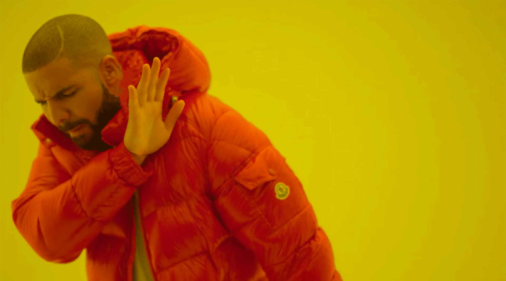
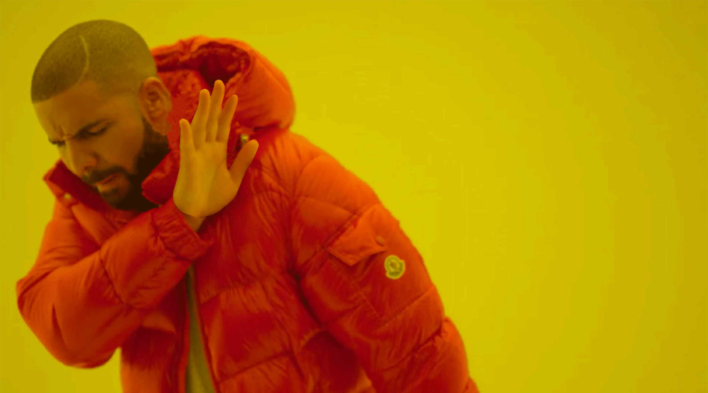

Adobe Tools Week
Een week voordat mijn eerste schooljaar aan de HvA begon, had ik mezelf ingeschreven voor een cursus van een week waarin je kon leren hoe je kon om gaan met Photoshop, Illustrator, Indesign en XD. Tijdens deze week had ik voor het eerst met deze programma's gewerkt en de rest van het schooljaar heb ik mezelf daarin kunnen verbeteren.
In photoshop heb ik een collage van een paar mijn favoriete artiesten gemaakt, samen met een simpel gifje. Ook heb ik in Illustrator drie ijsjes met de pen tool getekend, samen met een passend logo. In Indesign heb ik een voorblad en een paar paginas ontworpen voor een magazine en tot slot heb ik in Adobe XD een paar schermen van een prototype voor een ijs app gemaakt.
Photoshop
 
